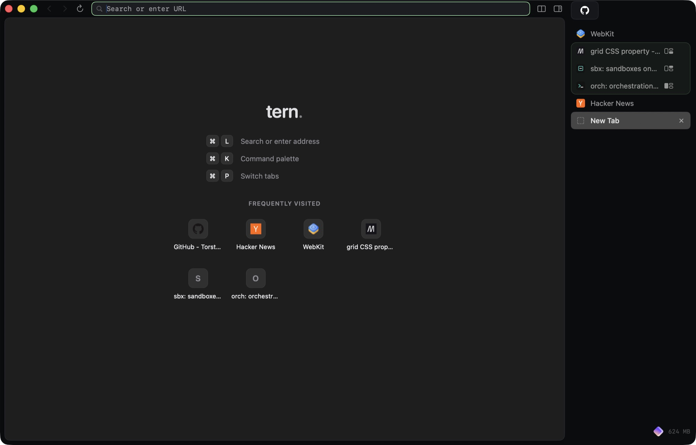
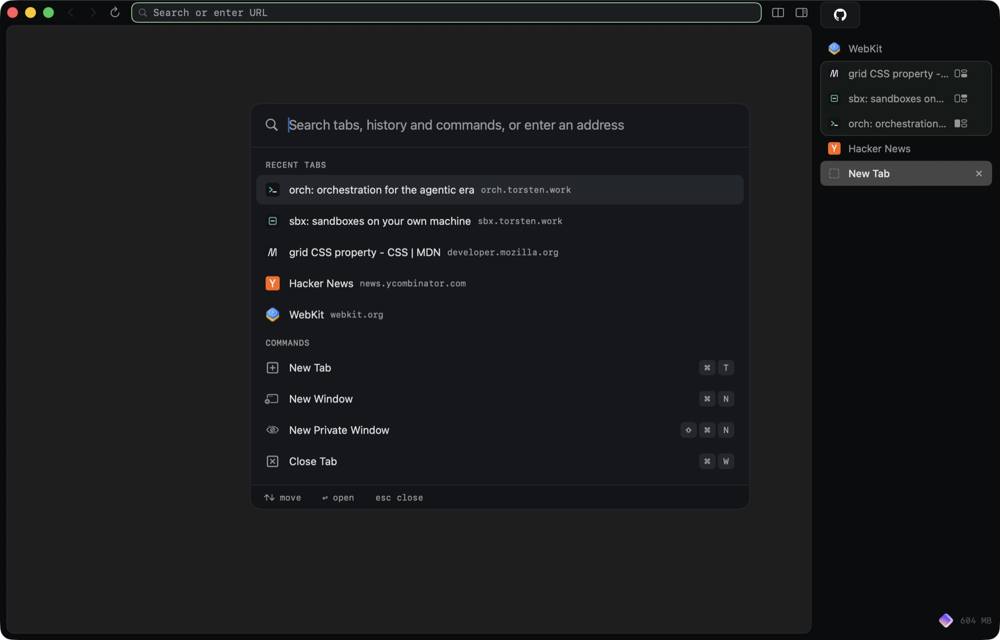
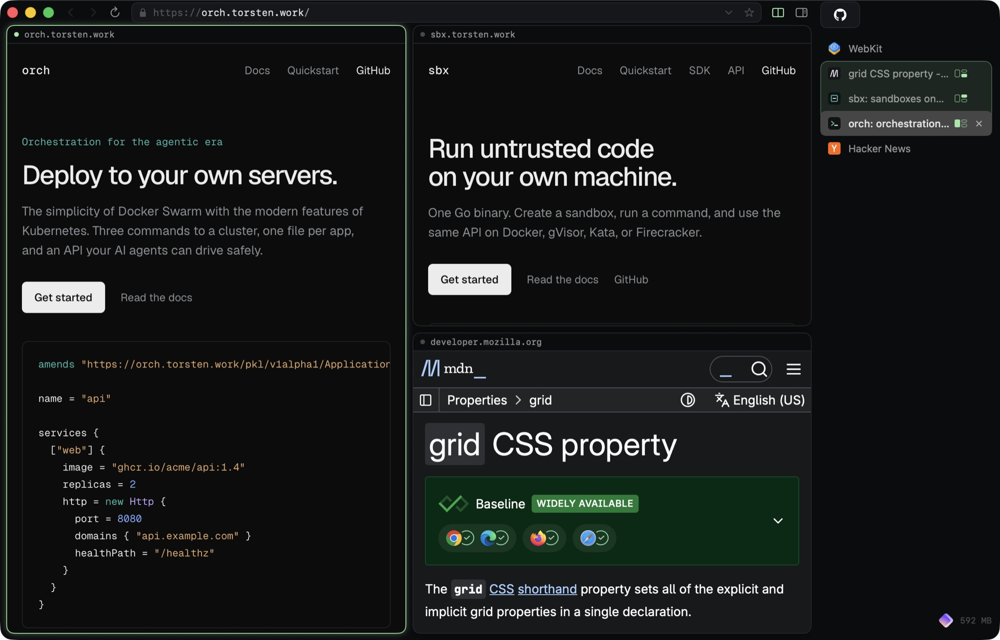

Link hints
Every link, button and field gets a letter code. Type it to click.
Read the docs DS or the guide GD
A browser for the Mac
Native on WebKit, built for the keyboard, and open to your coding agents.
Free and open source. Requires macOS 15.4 or later.

Search tabs, history and every command from one place. Then press ⌘J and click any link by typing.

Two to four tabs side by side, stacked or in a grid. Drag a tab onto the page, or press ⌥⌘→. Focus follows the pane you click.

Every link, button and field gets a letter code. Type it to click.
⌥-click opens a floating preview. Keep it as a tab or a split, or press esc.
Search a site directly. About 25 are built in, and you can add your own.
⌘W on a pinned tab that has wandered off takes it back to its page. Press it again and the tab goes to sleep.
On by default. The address bar stays out of the way until you point at the top edge or press ⌘L.
Phone, tablet and laptop sizes, with the right user agent and pixel density.
Every request the page made, filterable, with copy as cURL.
Press Add to Tern in the Chrome Web Store. Safari and unpacked extensions work too.
Built for agents
A local API, a tern CLI and an MCP server. Off until you turn it on.
Claude Code and other MCP clients open tabs, read the page as an outline, click, type, and read the console and network, all in the tabs you already have open.
Agent APIA tab an agent is acting on gets a purple ring and a tag, so you always know who's driving. You can also limit agents to the tabs they opened.
The API listens only on a Unix socket that only you can open, and no network port is ever opened. Scripts can use the same methods through the CLI.
EasyList and EasyPrivacy are compiled to native WebKit rules, so blocking costs the page almost nothing. Links lose tracking parameters before they load, and local dev servers are left alone.
A restored tab is just a URL and its history until you open it, so 200 tabs cost about as much as one. Background tabs are suspended after 15 minutes, and sooner when macOS runs low on memory.
3.8 MB, release build. No Electron and no bundled Chromium.
WebKit through WKWebView, in plain AppKit and Swift.
macOS 15.4 or later. To build, Xcode 16.3 or later and XcodeGen.
Chrome Web Store, Safari Web Extensions, and unpacked MV2 and MV3 extensions.
JSON-RPC over a local Unix socket, the tern CLI, and an MCP server.
MIT. Free and open source.
There are no signed releases yet, so you build Tern from source. You'll need Xcode and XcodeGen.
$ brew install xcodegen $ git clone https://github.com/TorstenDittmann/tern.git $ cd tern $ make release